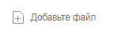
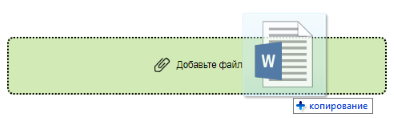
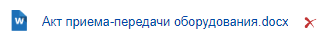

Файл
Элемент «Файл» предназначен для работы с файлами карточек. В отличии от элемента Список файлов данный элемент позволяет работать с файлами любых типов карточек, но не разделяет файлы на основные и дополнительные, а также не предоставляет функций для работы с электронными подписями.
Интерфейс элемента зависит от наличия загруженного файла, способа добавления файла и его настроек:
-
Файл не добавлен. Содержит настроенную текстовую метку.
 -
Файл добавляется методом перетаскивания.
 -
Файл добавлен.

После сохранения карточки, возможна работа с версиями файла. В этом случае в интерфейс добавляется номер версии.
Далее перечислены функции, предоставляемые элементом «Файл». Некоторые из указанных функций будут недоступны, если в настройках элемента отключена поддержка работы с версиями файла или у пользователя отсутствуют права на выполнения операции.
Добавление файлов. Добавление файла может быть выполнено одним из двух способов:
-
перетащите файл с файловой системы в область элемента «Файл»;
-
щелкните по элементу, когда файл не добавлен, и выберите файл с помощью Проводника.
Условия добавления файлов:
-
Типы файлов, которые можно добавлять1: docx, pdf, rtf, dot, doc, dotm, docm, dotx, ods, odt, csv, xlt, xls, xltm, xlsm, xltx, xlsx, jpg, jpeg, gif, png, bmp, tiff, tif, emf, wmf, xslt, xsl, xml, htm, html, txt, log, cs, asmx, ascx, aspx, js, cpp, h, css, idl, ini, java, rc, rc2, shtm, shtml, sql, zip, rar, 7z, vsd, vsdx, msg, one, pptx, ppt, avi, wav.
-
Хранение букв "ё" и "й" в операционных системах MacOS и Windows различается, поэтому рекомендуется избегать использования этих букв в названиях файлов (если планируется работать с файлами в обеих системах).
Удаление файлов. Для удаления файла:
-
из создаваемой карточки – нажмите кнопку ;
-
из существующей карточки – щелкните по названию файла и нажмите Удалить. Удаляемый файл, а также его карточка должны быть разблокированы. При удалении будут удалены все версии данного файла.
Открытие файла. Для открытия файла в связанной программе щелкните по названию файла и нажмите Открыть. Данная возможность доступна только для файлов Microsoft Office (программы должны быть установлены): doc, docx, docm, xls, xlsx, xlsm,ppt, pptx, odt и ods. Открытый для редактирования файл будет заблокирован от изменений со стороны других пользователей. Если в настройках элемента управления включен версионинг, при сохранении файла с изменениями будет создана новая версия.
Условия:
-
До завершения редактирования файла не закрывайте карточку, из которой он был открыт.
-
Если требуется запускать веб-браузер от имени не текущего пользователя Windows, используйте только Internet Explorer.
Предварительный просмотр. Для открытия файла в режиме предпросмотра щелкните по названию файла и нажмите Предварительный просмотр. Данная функция поддерживается только для файлов: doc, docx, xls, xlsx, txt, odt, ods, pdf, png, jpg, tiff, bmp, gif.
Скачивание файла. Для скачивания файла щелкните по названию файла и нажмите Скачать. Файл будет загружен на устройство.
Замена файла. Текущий файл может быть заменён на другой (должен соответствовать требованиям для добавления файл). Если в настройках элемента управления включен версионинг, будет заменена текущая версия. Для замены файла щелкните по названию файла, нажмите Заменить и выберите новый файл их хранилища устройства.
Загрузка новой версии файла. Для загрузки новой версии файла щелкните по названию файла, нажмите Загрузить версию и выберите новую версию файла из хранилища устройства. Тип файла должно совпадать с типом файла, версия которого добавляется. Возможность создания новой версии доступна только, если в настройках элемента Файл включен версионинг.
После загрузки версии номер текущей версии увеличится.
Просмотр версий файла. Текущая версия файла отображается справа от его названия. Для просмотра других версий файла щелкните по номеру текущей версии (на рисунке выше – «в. 2»). Будет открыто диалоговое окно со списком версий.
Для просмотра версии файла в режиме предварительного просмотра, щелкните по номеру версии. Требования к предварительному просмотру см. выше.
Для сохранения версии на устройство нажмите кнопку .
Добавление комментария к версии. Для добавления комментария к текущей версии щелкните по названию файла и нажмите Добавить комментарий. Будет открыто окно комментирования версии. В окне отображаются комментарии пользователей для текущей версии.
Введите комментарий в строку ввода и нажмите кнопку Сохранить. Добавленные комментарии отображаются в окне просмотра версий файла.
Список файлов
Для работы с коллекцией файлов карточки используется элемент Файл, встроенный в элемент Таблица.
Добавление файлов. Добавление файла может быть выполнено одним из двух способов:
-
перетащите файлы с файловой системы в область элемента «Таблица»;
-
нажмите кнопку и выберите файлы с помощью Проводника.
Условия добавления файлов аналогичны условиям добавления одиночного файла, приведенным выше.
Скачивание всех файлов. Для скачивания всех файлов, которые отображаются в списке, нажмите кнопку .
Удаление строки с файлом из списка. Для удаления строки из таблицы нажмите кнопку в строке с файлом. При этом будет удалена вся строка и файл, который был указан в строке.
При удалении файла с помощью команды Удалить контекстного меню файла будет удалён только файл – строка из таблицы не удаляется.
Операции с отдельными файлами выполняются аналогично рассмотренным выше для одиночных файлов.
Parent topic: Общие
1 Для возможности загрузки файлов .ascx, .cs и .java требуется дополнительная настройка. См. пункт Руководство администратора.